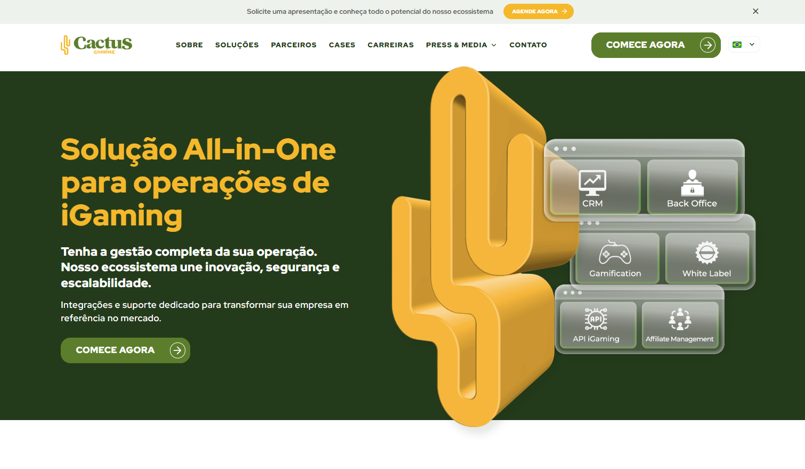
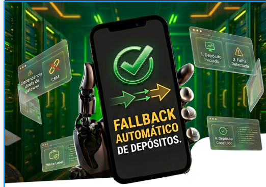
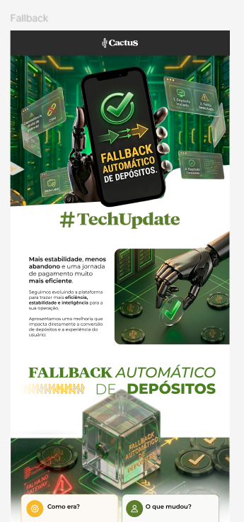
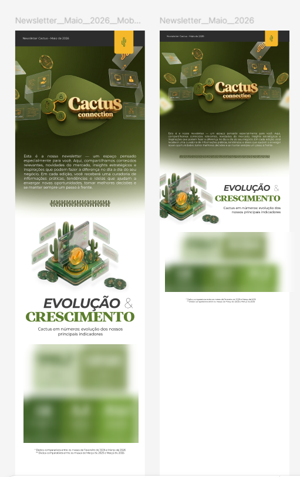
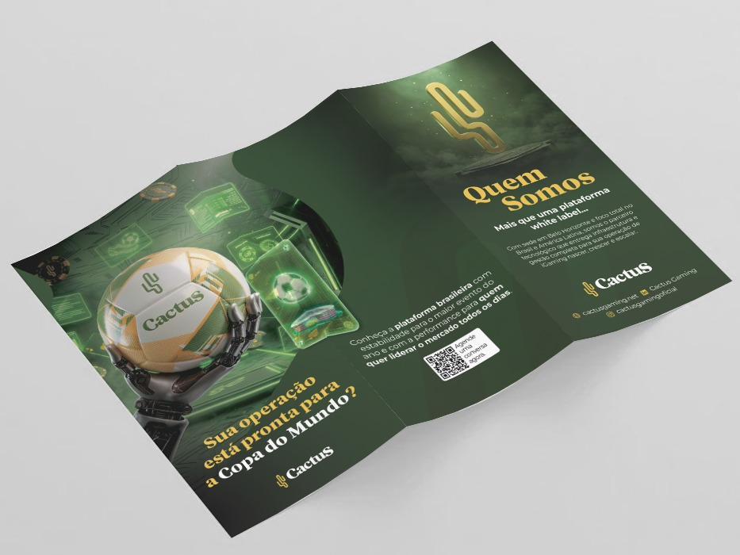
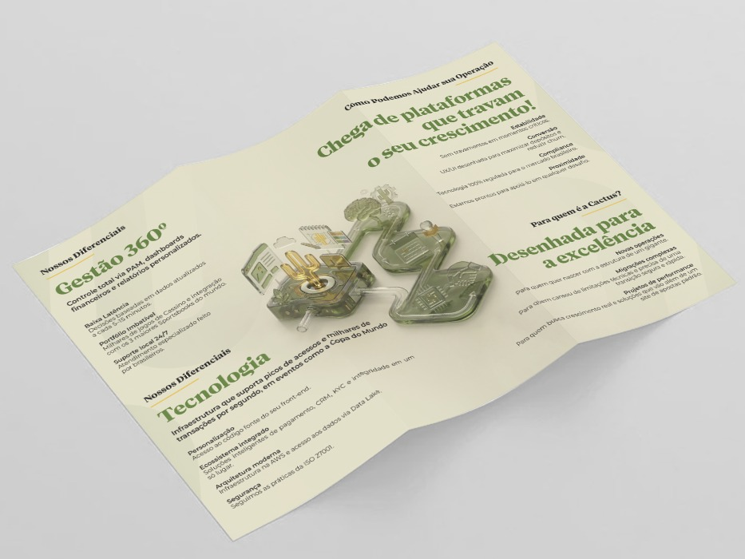
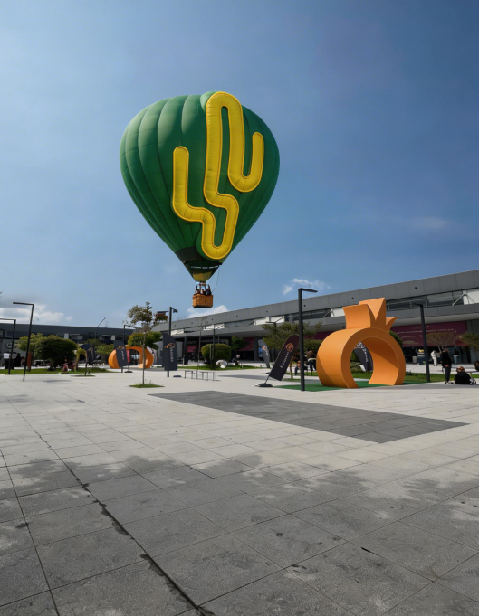

Plataforma brasileira white label de iGaming, com sede em Belo Horizonte e foco no Brasil e na América Latina. Atuei no produto e na comunicação da marca, do redesign do backoffice ao site, campanhas, e-mails e eventos.A Brazilian white-label iGaming platform, headquartered in Belo Horizonte and focused on Brazil and Latin America. I worked on the brand's product and communication, from the backoffice redesign to the website, campaigns, emails and events.
Um dos projetos mais importantes que fiz na Cactus: redesenhar o backoffice da plataforma para reunir operação, dados e ferramentas num só lugar.One of my most important projects at Cactus: redesigning the platform’s backoffice to bring operations, data and tools together in one place.
Acesso únicoSingle sign-in
Login com e-mail ou CPF numa tela clara e direta, que já apresenta o que o backoffice entrega.Sign in with email or CPF on a clear, direct screen that already shows what the backoffice delivers.
Dados em primeiro planoData up front
Dashboards com indicadores como depósitos, novos usuários, investimento total e LTV/CAC.Dashboards with metrics such as deposits, new users, total investment and LTV/CAC.
Tudo num só lugarAll in one place
Operação, dados e ferramentas unificados numa só experiência, com a identidade visual da Cactus.Operations, data and tools unified in a single experience, with the Cactus visual identity.
CONTEXTOCONTEXT
Uma marca de tecnologia que precisava falar com operadores de apostas de forma clara, confiável e memorável.A tech brand that needed to speak to betting operators in a way that was clear, trustworthy and memorable.
Meu trabalho foi traduzir esses objetivos em peças e interfaces consistentes: o redesign do backoffice, o site, as campanhas de e-mail, a newsletter, os materiais impressos e a presença da marca em eventos, sempre conectando marketing e produto.My job was to turn those goals into consistent pieces and interfaces: the backoffice redesign, the website, email campaigns, the newsletter, printed materials and the brand's presence at events, always connecting marketing and product.

Comunicados de produto, como o #TechUpdate do Fallback automático de depósitos, e a newsletter mensal Cactus Connection.Product announcements, like the #TechUpdate on automatic deposit fallback, and the monthly Cactus Connection newsletter.


#TechUpdate · Fallback automático de depósitos#TechUpdate · Automatic deposit fallback

Newsletter Cactus Connection · mobile e desktopCactus Connection newsletter · mobile and desktop
Folder institucional com tema da Copa do Mundo, apresentando a plataforma, os diferenciais e a tecnologia da Cactus.A World Cup–themed corporate brochure presenting the Cactus platform, its differentiators and its technology.


O cacto da Cactus ganhou escala real num balão personalizado, levando a identidade da marca para fora das telas.The Cactus cactus went life-size on a custom hot-air balloon, taking the brand identity off the screen.
